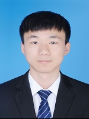

<div class="home">
  <script async src="https://www.googletagmanager.com/gtag/js?id=UA-108085250-1"></script>
<script>
  window.dataLayer = window.dataLayer || [];
  function gtag(){dataLayer.push(arguments);}
  gtag('js', new Date());

  gtag('config', 'UA-108085250-1');
</script>
 <style> 
body
{
background-image:url('background.png');
background-repeat:no-repeat;
}
<style>  

<br>
  <p style="font-weight: bold;">Welcome! </p> 
  <br>
  I am Longyu Zhou. Currently, I am working as a Reserach Fellow in <a href="https://istd.sutd.edu.sg/" target="_self"> Information Systems Technology and Design</a>, collaborating to <a href="https://people.sutd.edu.sg/~tonyquek/" target="_self"> Prof. Tony Quek</a> at Singapore University of Technology and Design (SUTD), Singapore.
<br><br>
  <br>
  I have purchased a Ph.D. degree in <a href="https://www.sice.uestc.edu.cn/" target="_self"> School of Information and Communication Engineering</a> at the University of Electronic Science and Techonology of China (UESTC), Chengdu, 
  China. During my Ph.D. journey, I worked as a visting student in Embedded Systems Group (Supervised by <a href="https://www.st.ewi.tudelft.nl/qing/" target="_self"> Dr. Qing Wang</a>) at Delft University of Technology (TU Delft), Delft, the Netherlands for almost one year. 
  <br>
NEWs:
<br><br>
2024: 
<br><br>
Invited to serve IEEE ICCCN as a TPC member.
<br>
Our paper, <a href="https://ieeexplore.ieee.org/document/10437396" target="_self"> Graph Learning Enhanced UAV Swarms for MTT</a>, is accepted to IEEE Globecom.   
<br><br>
2023: 
<br><br>
Invited to serve IEEE ICCC as a TPC member.
<br>  
Our paper, <a href="https://ieeexplore.ieee.org/document/10329973" target="_self"> Federated Digital Twins</a>, is accepted to IEEE TMC.
<br>
Our paper, <a href="https://ieeexplore.ieee.org/document/10246153" target="_self">  Tiered Digital Twins</a>, is accepted to IEEE TWC.
<br><br>
2022: 
<br><br>
Our paper, <a href="https://ieeexplore.ieee.org/document/9839387" target="_self">  ISC in UAV Swarms for MTT</a>, is accepted to IEEE TMC.
<br><br>
My research focuses on Digital Twin, UAVs Swarms for Multiple Targets Tracking, Wireless Sensor Networks, Reinforcement Deep Learning. I often incorporate machine learning techniques into my research to enable my study. Feel free to look at my <a href="https://zhoulongyu.github.io/publications" target="_self">research page</a> and my <a href="https://zhoulongyu.github.io/tutorials" target="_self">tutorials</a> to get more!
<br><br>
 <i>NOTE:</i> This is a personal webpage and any views or information reflect solely the author and are not the views of the Federal Reserve Board.
</div>
